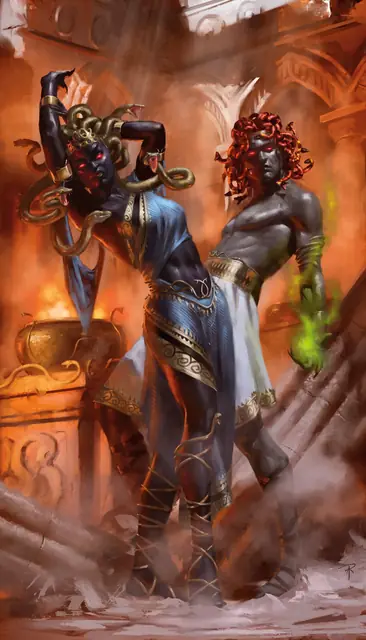

Медуза
Medusa
Среднее Чудовище, Принципиальное Злое

Класс Защиты 15 Инициатива +6 (16)
Хиты 127 (17к8 + 51)
Скорость 30 футов
| мод | спас | ||
|---|---|---|---|
| СИЛ | 10 | +0 | +0 |
| ЛОВ | 17 | +3 | +3 |
| ТЕЛ | 16 | +3 | +3 |
| мод | спас | ||
|---|---|---|---|
| ИНТ | 12 | +1 | +1 |
| МДР | 13 | +1 | +4 |
| ХАР | 15 | +2 | +2 |
Чувства Тёмное зрение 150 футов, пассивное Восприятие 14
Языки Общий
Опасность 6 (2 300 опыта; БВ +3)
Действия
Мультиатака. Медуза совершает либо две атаки Когтями и одну атаку Змеиными волосами, либо три атаки Ядовитым лучом.
Когти. Бросок рукопашной атаки: +6, досягаемость 5 фт. Попадание: 10 (2к6 + 3) Рубящего урона.
Змеиные волосы. Бросок рукопашной атаки: +6, досягаемость 5 фт. Попадание: 5 (1к4 + 3) Колющего урона плюс 14 (4к6) урона Ядом.
Ядовитый луч. Бросок дальнобойной атаки: +5, дистанция 150 фт. Попадание: 11 (2к8 + 2) урона Ядом.
Бонусные действия
Окаменяющий взгляд (Перезарядка 5-6). Спасбросок Телосложения: Сл 13, каждое существо в 30-футовом Конусе. Если медуза видит своё отражение в этом Конусе, она должна совершить данный спасбросок. Первый провал: Цель становится Опутанной и повторяет спасбросок в конце каждого своего хода, если она всё ещё Опутана, оканчивая этот эффект при успехе. Второй провал: Цель перестаёт быть Опутанной и становится Окаменевшей.
Бонус мастерства +3
Среда обитания Пустыня
Сокровища Любые
Медуза
Змеевласая отшельница с окаменяющим взглядом
Медузы — надменные создания с волосами из живых змей и печально известным окаменяющим взглядом, что селятся в местах былой славы. Часто они держатся на отшибе цивилизации или странствуют инкогнито, оставляя след из окаменевших жертв. Одни медузы подчиняют себе шайки чудовищ и бандитов, держа их в страхе перед окаменением; другие же набирают слуг, невосприимчивых к этому, — горгулий и горгон.
Медузы рождаются или создаются в силу сверхъестественных обстоятельств. Совершите бросок по таблице «Судьбы медуз» для вдохновения или определите сами причину появления медузы.
Судьбы медуз
| 1к6 | Медуза была… |
| 1 | Рождена медузой и не ведает о проклятии или обстоятельствах, что поразили её предка. |
| 2 | Создана божеством и приставлена охранять сокровище либо тайну. |
| 3 | Культисткой, заключившей сделку с исчадиями и вкушавшей дары, которые с тех пор истаяли. |
| 4 | Путешественницей, преображённой и принуждённой защищать проклятые руины. |
| 5 | Тщеславной аристократкой, чья магическая попытка обрести вечную красоту обернулась бедой. |
| 6 | Укушена волшебной змеёй или рептильным богом, принявшем змеиный облик. |